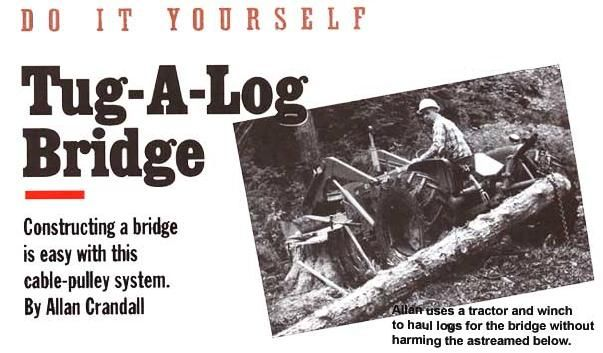
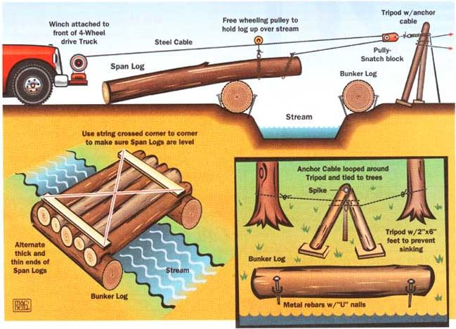
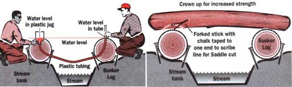
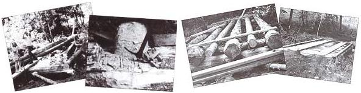

Do It Yourself
February/March 1994

Outside of a drought or miracle similar to the crossing of the Red Sea, there is no way to make a dry crossing over a body of water without a bridge. I desperately needed one to cross the Class One stream on our property in the western Cascades of Oregon. So I decided to build a log bridge, one that would meet my needs without causing damage to the environment.
The first thing I did was take a trip to the area State Forest office and make a request for a bridge-building permit. That was followed by an on-site inspection by the local forester, who decided the stream banks were level enough so that water drainage from a road wouldn't flow down onto a bridge and into the stream.
The permit explained the two best methods of moving logs across a stream without harming the streambed. The method I selected, explained below, involves an elevated-cable system, a truck winch, and an anchored-log tripod with a cable pulley. This allowed me to haul logs across the stream without touching the streambed at all.
The other (more costly) method is to use a large backhoe to lift the logs across the stream. According to the permit, we were also responsible for reseeding those areas along the roadway and bridge that were disrupted by our machinery. The whole process was so simple and turned out so well that I drew up some plans and diagrams to share with you.
Illustration By Scott MacNeill

KEEP THINGS SQUARE:
If you have a plastic one-gallon milk container, some plastic tubing, and water, you can make a simple water level to even up the bunker logs.
Bridge Construction

Begin by finding (or, if necessary, hiring) someone with a portable saw mill to saw planks for the bridge deck. We had a friend cut forty 3 x 12s, sixteen 2 x 12s, and seven 4 x 6s. Fall and limb just enough cedar trees to make six 42' span logs (which run across the stream) and two 12' bunker logs (which hold up the span logs).

Place the larger of the two bunker logs in a shallow trench on the accessible side of the stream (the side you're standing on); you may have to dig a trench if a natural one doesn't exist. Level the top. Next, position long but narrow logs across the stream, allowing the top ends to rest on the bunker so that they form a ramp. Using the ramp, roll the second bunker log to the far bank.
To make sure the bunker logs are level with each other, you can create a water level: Take 50' of plastic tubing and stick one end through the bottom of a one-gallon container filled halfway with water. Have one person hold the container on the bunker log located on the accessible side of the stream. Have another person hold the free end of the tube on the bunker log, at the same height of the first bunker log. If the level of water in the container is equal to the water level at the other end of the tube, you know your logs are level.
Next, attach the bunker logs to reinforcement bars so they won't be dislodged while you're working. Place a 5/8" reinforcement bar next to the bunker log and hammer it into the ground. Then hammer a 20-penny nail halfway into the log, bending it so that the nail makes a U-shaped curve over the reinforcement bar and reenters the log. Do the same for the other bunker log.
It's now time to move the span logs. Haul the logs over the top of the first bunker and into place by constructing the following pulley system ( see diagram ).
CROWNING GLORY:
For maximum bridge strength, mark the natural curvature of the logs with a piece of chalk, and then position the logs so that this side is facing up.
Attach a chain-log choker (which will wrap around the span log) to a freewheeling pulley on a steel cable. This cable should extend from the choker, across the stream, through a pulley attached to an A-shaped log tripod (see diagram on page 26), and back across the stream to a truckmounted winch. The log tripod will create a pulling point approximately eight to 10' above the streambed, and the free- wheeling pulley on the cable will hold the log upward and horizontal over the stream. Arrange the span logs so that each butt end (the bottom half of the log) sits next to a top end. This will distribute strength, making the deck more stable.
Next, mark the crowns in each log (the natural curvature that runs along one side of the log) so that you can place them facing upwards; this allows for maximum bridge strength. Cut the butt ends of the outside span logs to fit the bunker logs.
The best way to do this is to mark the cut on the span log while it's sitting on the bunker log with a piece of chalk taped to a fork stick. Then level the top ends so they are square with the butt ends. All four corners should now be level.
Next, place one 3 x 12 deck plank at each end of the bridge (so they are lying on top of and horizontal to the span logs) and trim the tops of the logs so that the planks are level and touching the top of each log (shims can be used if tacked). To make sure that your end planks are parallel to each other, form an `X' with two pieces of string so that it reaches across the entire bridge from corner to corner. If strings don't touch the center of the X, the end planks aren't parallel. If they touch lightly in the center, the planks are parallel. If (or once) this is true, secure the strings to each of the four corners.
Now stretch a piece of string tightly along each side of the bridge so the pieces run across evenly. To give your bridge extra strength in the middle-the center is a prime spot for future sagging-place your center plank so that it is 1/2" higher than the side strings (and thus also the end planks). Attach the strings to the center plank, and use them as a guide for fitting the remaining deck plank, which raises slightly the center of the deck.
As you're positioning the deck planks, leave a 1/4" gap between them to allow for expansion. Rough-trim the log tops to fit the planks by making a chain saw cut every two inches to the necessary depth (an ax or hammer will help you take the excess wood out). Attach the planks to the logs below them using 12" spikes.
Once the deck is complete, place pairs of 2 x 12s along the full length of the bridge where tires will make contact, and one 2 x 12 on each end to cover log ends. Last, attach the 4 x 6s along the sides of the bridge to form the side guards.
|
 |
 |
 |
|
 |
|
|